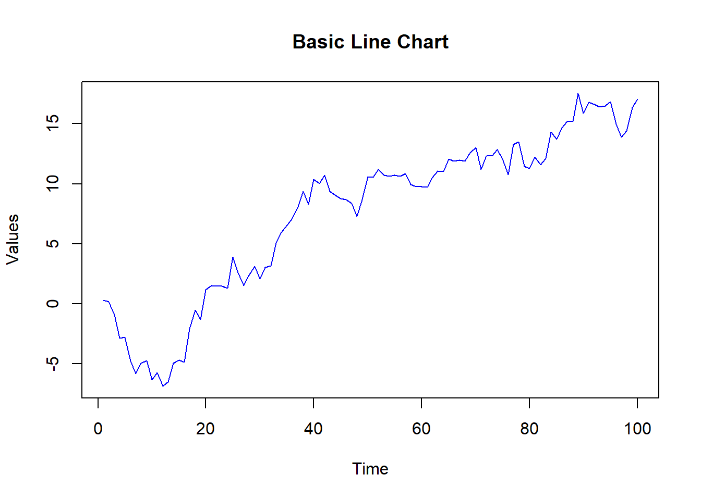
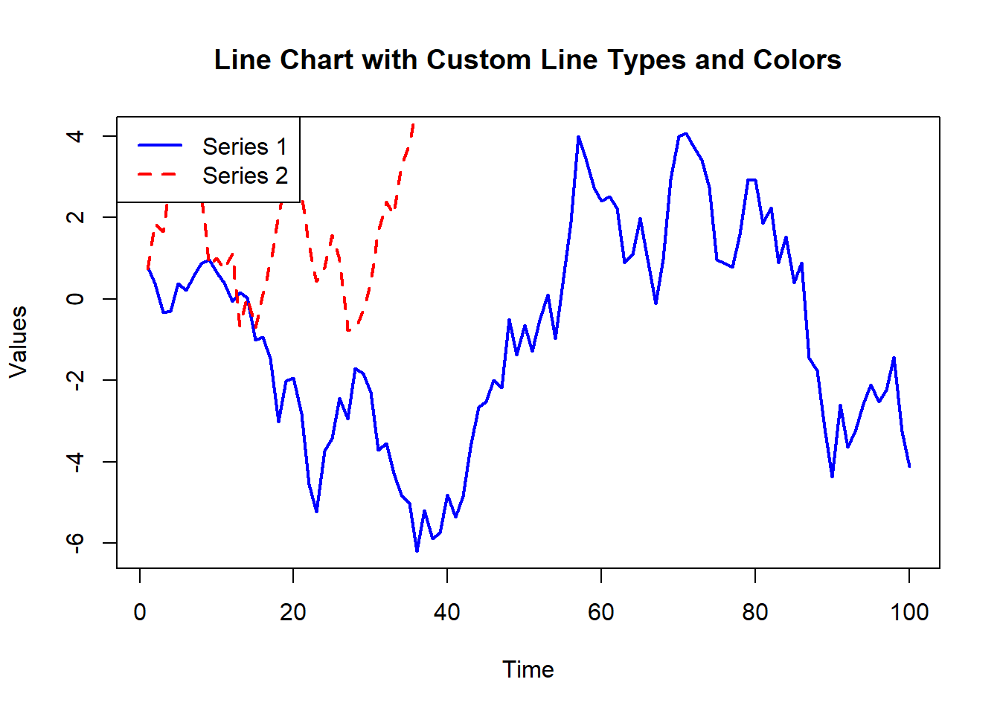

# Plot result
time <- 1:100
values <- cumsum(rnorm(100))
plot(time, values, type = "l", main = "Basic Line Chart", xlab = "Time", ylab = "Values", col = "blue")
TERE
June 21, 2024
Line charts are a fundamental tool for visualizing data trends over time or ordered categories. They display data points connected by straight lines, helping to identify patterns, trends, and changes in the data. In this lecture, we will learn how to create and customize line charts in R.
A line chart is a type of chart that displays information as a series of data points connected by straight line segments. It is particularly useful for visualizing trends over time.
Visualizing time series data.
Tracking changes and trends.
Comparing multiple series.
Customizing line charts involves adding titles, labels, colors, line types, and markers to enhance readability and interpretability.
A basic line chart displays data points connected by straight lines.
Adding titles and labels helps in understanding the context and meaning of the line chart.
Customizing line types and colors can differentiate between multiple series or highlight specific data points.
# Creating sample data with multiple series
values1 <- cumsum(rnorm(100))
values2 <- cumsum(rnorm(100, mean = 0.5))
# Creating a line chart with customized line types and colors
plot(time, values1, type = "l", main = "Line Chart with Custom Line Types and Colors", xlab = "Time", ylab = "Values", col = "blue", lty = 1, lwd = 2)
lines(time, values2, col = "red", lty = 2, lwd = 2)
legend("topleft", legend = c("Series 1", "Series 2"), col = c("blue", "red"), lty = c(1, 2), lwd = 2)# Plot result
values1 <- cumsum(rnorm(100))
values2 <- cumsum(rnorm(100, mean = 0.5))
plot(time, values1, type = "l", main = "Line Chart with Custom Line Types and Colors", xlab = "Time", ylab = "Values", col = "blue", lty = 1, lwd = 2)
lines(time, values2, col = "red", lty = 2, lwd = 2)
legend("topleft", legend = c("Series 1", "Series 2"), col = c("blue", "red"), lty = c(1, 2), lwd = 2)
Adding markers to data points can highlight specific values and make the chart more readable.
Adding gridlines can make it easier to read the values of the data points.
Here’s a comprehensive example of creating and customizing line charts in R.
# Creating sample data
time <- 1:100
values1 <- cumsum(rnorm(100))
values2 <- cumsum(rnorm(100, mean = 0.5))
# Basic line chart
plot(time, values1, type = "l", main = "Basic Line Chart", xlab = "Time", ylab = "Values", col = "blue")
# Line chart with titles and labels
plot(time, values1, type = "l", main = "Line Chart with Titles and Labels", xlab = "Time", ylab = "Values", col = "blue")
# Line chart with custom line types and colors
plot(time, values1, type = "l", main = "Line Chart with Custom Line Types and Colors", xlab = "Time", ylab = "Values", col = "blue", lty = 1, lwd = 2)
lines(time, values2, col = "red", lty = 2, lwd = 2)
legend("topleft", legend = c("Series 1", "Series 2"), col = c("blue", "red"), lty = c(1, 2), lwd = 2)
# Line chart with markers
plot(time, values1, type = "b", main = "Line Chart with Markers", xlab = "Time", ylab = "Values", col = "blue", pch = 19)
# Line chart with gridlines
plot(time, values1, type = "l", main = "Line Chart with Gridlines", xlab = "Time", ylab = "Values", col = "blue")
grid(nx = NULL, ny = NULL, col = "lightgray", lty = "dotted")In this lecture, we covered how to create and customize line charts in R. We explored various techniques for adding titles, labels, colors, line types, markers, and gridlines. Line charts are a powerful tool for visualizing data trends over time or ordered categories.
For more detailed information, consider exploring the following resources:
If you found this lecture helpful, make sure to check out the other lectures in the R Graphs series. Happy plotting!